Free
computer Tutorials
|
Free
computer Tutorials
|
|
 home home |
|
|||||
Microsoft Word 2007 to 2010Section Nine: 1 2
Creating a Mail Merge LetterIn the previous tutorial, we set up a mail merge data source. We can now create the mail merge letter itself. For this, we'll use the letterhead we created previously. But you can create a new blank document, if you prefer.
So click on the round Office in the top left of Microsoft Word, if you have the 2007 version. If you have Word 2010, click the File tab. Then click New from the menu. From the New Document dialogue box, select My Templates. You'll then see another dialogue box appear. Click on your letterhead template to select it, then click OK to create a new document with your letterhead on it. For the text of the letter, type the following: Dear , Thank you for the donation. It will really help us to continue with the project. We couldn't survive without people like your good self making a contribution. The Team Your letter will then look something like ours below: 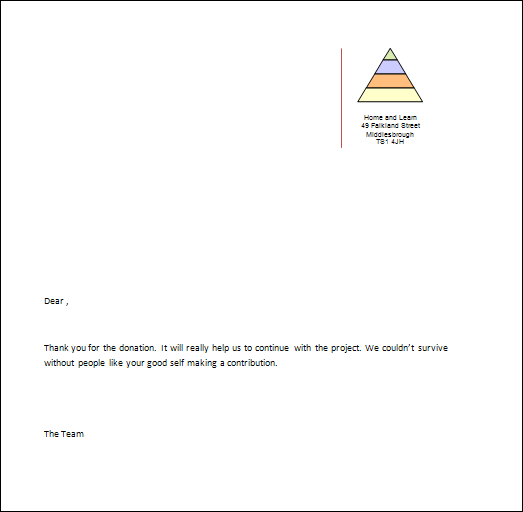 To use your new database, click back onto the Mailings tab in the Office ribbon. From the Start Mail Merge panel, click on Select Recipients again. From the menu, select Use Existing List: 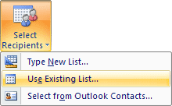 When you click on Use Existing List you'll see a new dialogue box - Select Data Source. You should see your Address List database on the list of available ones. Click on this to select it, then click the Open button at the bottom. 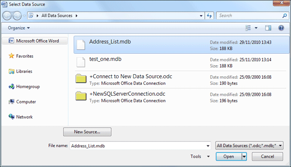 If you can't see any Data Sources then look in your Documents folder, then double click My Data Sources: 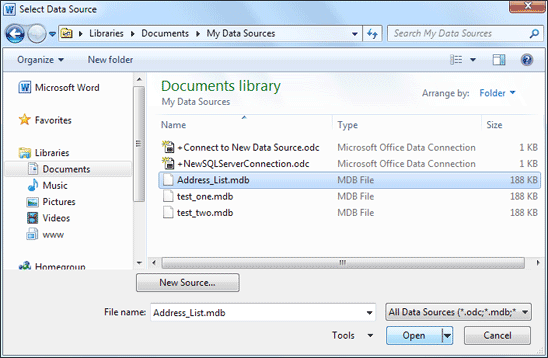 When you are returned to Microsoft Word you will see that more options are available on the Mailings tab. One of those options is the Write & Insert Fields panel. Think of a Field as one of your columns from your database (Title, First Name, Last Name, etc). Position your cursor just before the comma after "Dear". Now click the Inset Merge Field item on the Write & Insert Fields panel to see the following: 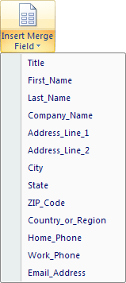 The items on the menu are all the columns from your database. With your cursor just before the comma after "Dear", click the Title item from the menu. Now hit the spacebar on your keyboard. From the same menu, select the Last_Name field. Your letter will then look like this: 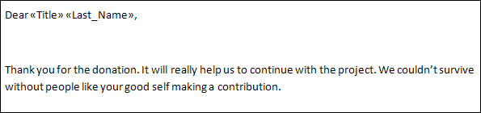 (The pointy arrows mean that you have a merge field inserted at that position.) To get an address at the top left of the letter, you can insert more fields from the menu. But there is an easier way. Position your cursor near the top of the letter. From the Write & insert Fields panel, click the Address Block item: 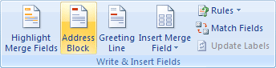 You will then see this dialogue box appear: 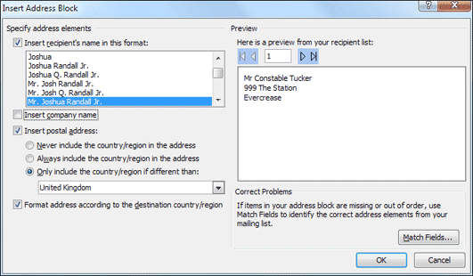 The list box at the top left allows you to select whether you want a name added before the first line of the address, and in what format. If you don't like that format, select another from the list. You'll then see a new preview appear to the right. In the image above, we've selected a name format, and unchecked the box for "Insert company name". Everything else is left on the default. Click OK when you're happy with your address formatting. You'll then see the following appear at the top of your letter: 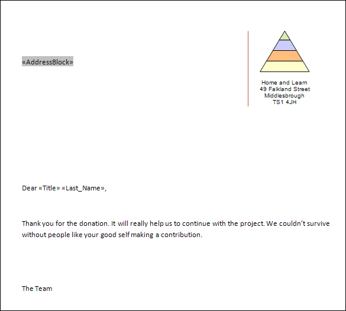 To see what effect all this has, you could click the Preview button on the Mailings tab. Instead, though, click the Finish & Merge button. From the menu that appears, select Edit Individual Documents: 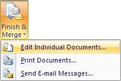 When you click on Edit Individual Documents the merge will begin. Because we had four addresses on our list, we'll have four individual letters. The first one will look like this: 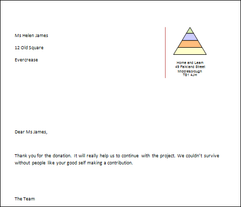 As you can see, the merge fields have been replaced with actual names and addresses. Each letter will be different, one for each of the entries on our list.
And we'll leave mail merge there. There's a lot more that you can do with it. For example, you can create labels for your addresses, and then merge from your list, use a different database and use queries - in fact it's a huge subject that will take you way beyond the advanced stage. If you want to explore further, use the following for a Google search (including the quote marks): "mail merge" +"Word 2007" Obviously replace 2007 with 2010 of you have that version. But you'll have a lot of results to examine! In the next section, we'll take a look at tables. Tables in Microsoft Word 2007/2010 --> <--Back to the Word Contents Page View all our Home Study Computer Courses
|
||||||
|